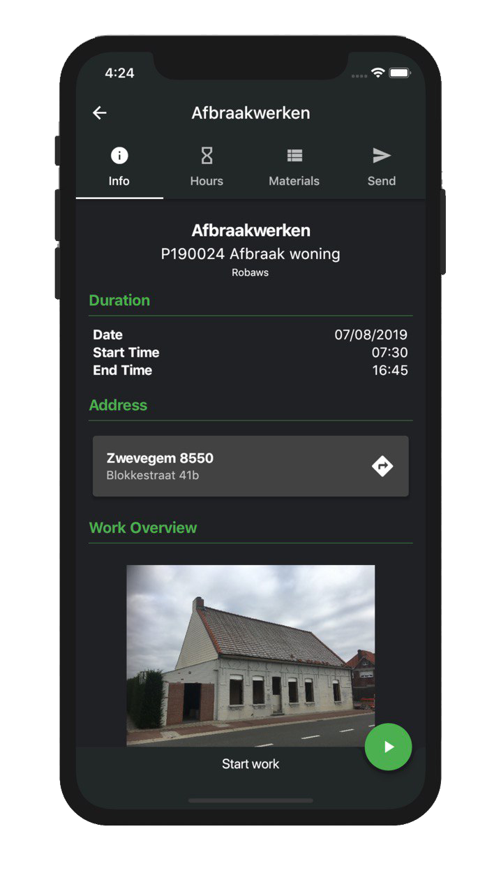

Client
ROBAWS is a company based in Belgium that offers “Administration software for construction and project companies.”
Project
Beginning in 2019, ROBAWS hired me to help construct a cross platform mobile app called Wappy to
power
their administrative software suite.
The goal of this app was to allow project based companies such as those in construction to
consolidate
both delivery of work orders to employees, tracking of work done and materials used.
This would allow companies to maximise their efficiency and productivity while simultaneously
letting workers complete
their job and log required information reliably and conveniently.
Workers were enabled to log what materials they used, how much time they spent at sites etc.
More importantly they were given a streamlined interface to receive workorders from their
employers that
enclosed all of the contact info, locations, documents and associated data to complete their
work.